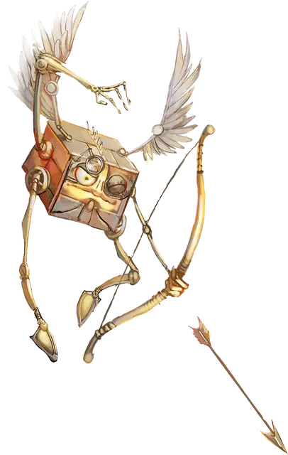

Квадрон
Quadrone
Средний Конструкт, законно-нейтральный

Класс Доспеха 16 (природный доспех)
Хиты 22 (4к8 + 4)
Скорость 30 футов, летая 30 футов
| мод | спас | ||
|---|---|---|---|
| СИЛ | 12 | +1 | +1 |
| ЛОВ | 14 | +2 | +2 |
| ТЕЛ | 12 | +1 | +1 |
| мод | спас | ||
|---|---|---|---|
| ИНТ | 10 | +0 | +0 |
| МДР | 10 | +0 | +0 |
| ХАР | 11 | +0 | +0 |
Навыки Восприятие +2
Чувства истинное зрение 120 футов, пассивное Восприятие 12
Языки Модронский
Опасность 1 (200 опыта)
Бонус мастерства +2
Особенности
Косное сознание. Квадрона нельзя заставить действовать так, как противоречит его природе или инструкциям.
Распад. Если квадрон умирает, его тело рассыпается в пыль, оставляя лишь оружие и то, что он нес.
Действия
Мультиатака. Квадрон совершает две атаки кулаками или четыре атаки коротким луком.
Кулак. Рукопашная атака оружием: +3 к попаданию, досягаемость 5 футов, одна цель. Попадание: Дробящий урон 3 (1к4 + 1).
Короткий лук. Дальнобойная атака оружием: +4 к попаданию, дистанция 80/320 футов. Попадание: Колющий урон 5 (1к6 + 2).
Описание
Квадроны — искусные бойцы, в подразделениях модроньих армий они служат артиллерией и полевыми офицерами.
См. дополнительно статью: "Бестиарий: Модроны"